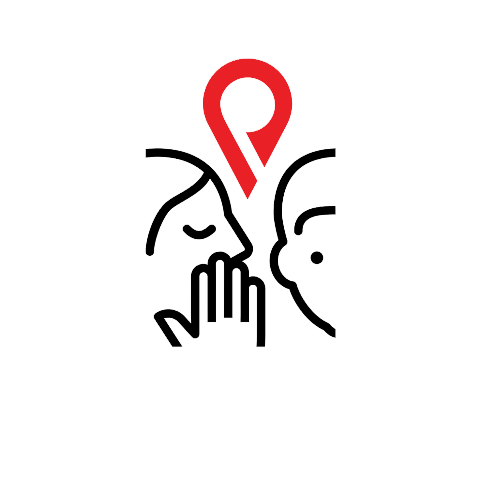

A unique community-driven web application that serves as a digital "confession wall" for Iloilo City. Named after the Hiligaynon word for "whisper," Hutik allows users to post anonymous thoughts, secrets, and stories tied to specific geographic locations, creating a localized map of shared human experiences.
This platform transforms how communities share and discover local narratives by connecting people through geographically bound, authentic human stories. Every whisper is pinned to a location, creating an interactive mosaic of the city's collective voice.
Try Live Demo
Modern JavaScript library for building interactive user interfaces with component-based architecture and real-time updates
Core programming language for client-side logic, location handling, and dynamic interactivity
PostgreSQL-based backend providing real-time database, authentication, and API management for anonymous confessions
Browser-based geolocation to capture user location and tie confessions to precise geographic coordinates
Lightweight open-source mapping library for rendering interactive maps and visualizing location-based confessions
Interactive Leaflet maps displaying all confessions pinned to their exact locations across Iloilo City.
Seamless geolocation capture that automatically tags confessions with precise coordinates for location-based discovery.
Posts anonymous confessions without revealing user identity, ensuring safe and honest expression of thoughts.
Users can interact with confessions through likes, reactions, and comments to build community connections.
Discover confessions from nearby locations, creating hyper-local narratives and community insights.
End-to-end encryption and Supabase authentication ensure user data protection and anonymous posting integrity.
Let's discuss how I can help bring your project to life
Get in Touch Back to Portfolio